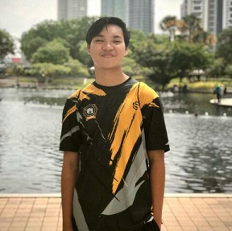

Assalamualaikum,My Name is Muhammad Razman Bin Sanorazman.Im 20 Years Old. I was born on 9 March 2001 in Hospital KPJ,Alor Star,Kedah.I was raised at Taman Pulai Indah,Johor Bahru.Now,I live in Sungai Petani,Kedah.My races is Malay and religion is Islam.I have working experience at Aeon Johor Bahru as cashier and waiter at Singgah Selalu Restaurant. My dream since in primary school is to become Library Teacher.It is because i love teaching children also that i have an experience become President Librarian in Primary and Secondary School.
IMS456 Assignemt 1:My Personal Website